브랜드의 자부심이 담긴 기술력과 섬세한 디자인이 돋보일 수 있도록 구상하였고, 절제된 장식요소들과 깔끔하게 정제된 화보이미지들로 클래식한 하이엔드 워치메이킹 이미지를 강조. 또한, 수많은 시계들 중에서 고객들의 성별, 나이대, 취향 등을 고려해 맞춤형 시계를 추천해주는 기능도 새롭게 넣어 다양한 모델들을 체험할 수 있도록 새로운 서비스를 기획
작업기간
기획 및 제작(2주)XD(2일)
작업과정
컨셉설정 > 화면설계 > XD프레임 작업 > 포토샵 디자인
작업물
기획 보기
메인페이지 보기
서브페이지 보기
*PC에서 보시는 걸 추천드립니다
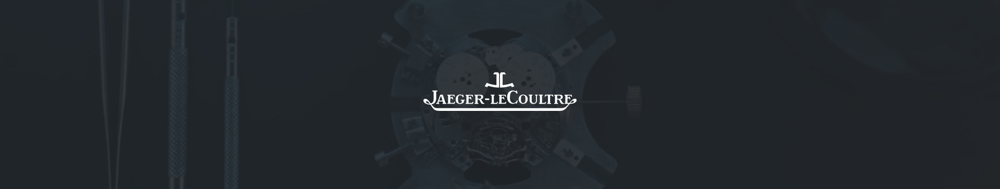
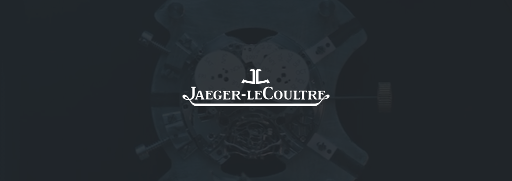
DESIGN SYSTEM 01-
STRATEGY
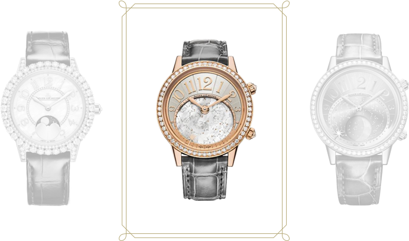
전 세계에서 최상급의 무브먼트 제조기술로 유명한 예거 르쿨트르는 세계 탑5위 안에 드는 타 하이엔드 브랜드에서 부품을 수정해서 사용할 정도로 섬세하고 높은 기술력을 가지고 있습니다. 또한 1833년 이래로 시계들은 다양한 연령대 및 취향에 부합할 수 있도록 깊이있는 디자인들을 선보여왔습니다.그러나 현재 수준높은 제조기술과 그 위상을 드러내는 디자인들을 고객 한 사람에게 맞춤으로 셀렉해주는 컨텐츠가 없다는 점이 아쉬워 고객의 취향을 반영하여 시계들을 추천해주는 컨텐츠를 추가하였습니다. 또한 전체적으로 깔끔하고 포맷을 이용한 레이아웃으로 웹사이트를 방문한 고객들에게 정돈되고 통일되는 느낌을 전달하였습니다.
DESIGN SYSTEM 02-
SITE MAP
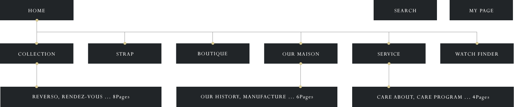
DESIGN SYSTEM 03-
GRID PLAN
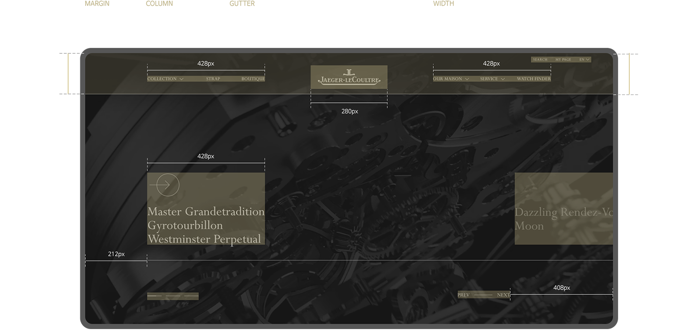
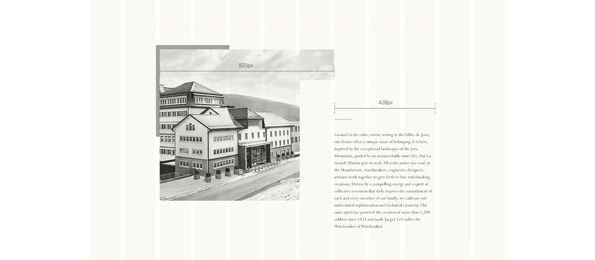
DESIGN SYSTEM 04-
COLORGRAPHY
DESIGN SYSTEM 05-
TYPOGRAPHY
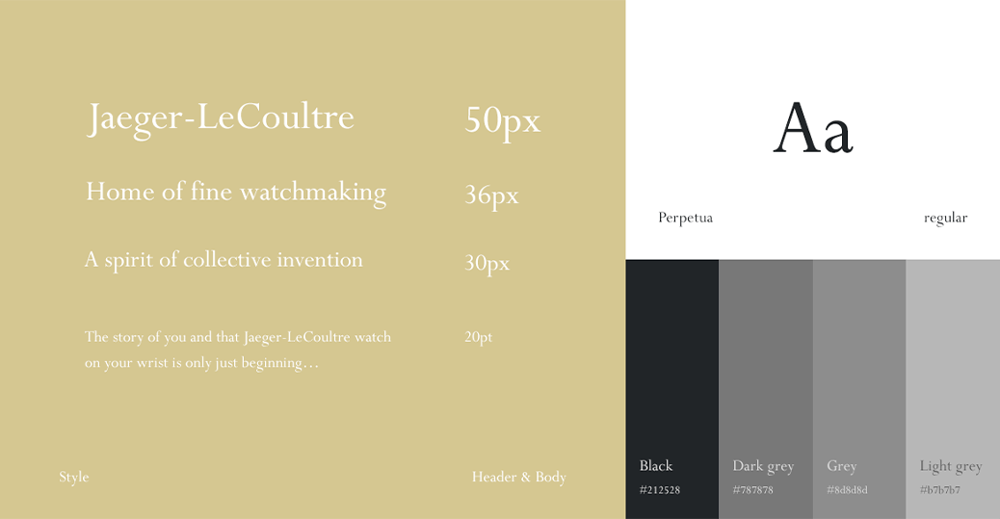
DESIGN SYSTEM 06-
DETAIL
컨텐츠를 장식하는 요소에도 로고에 있는 곡선의 느낌을 반영해 좀 더 통일감이 느껴지도록 디자인하였습니다.
MAIN PAGE 01-
LAYOUT
메인페이지 보기
설명버전 보기
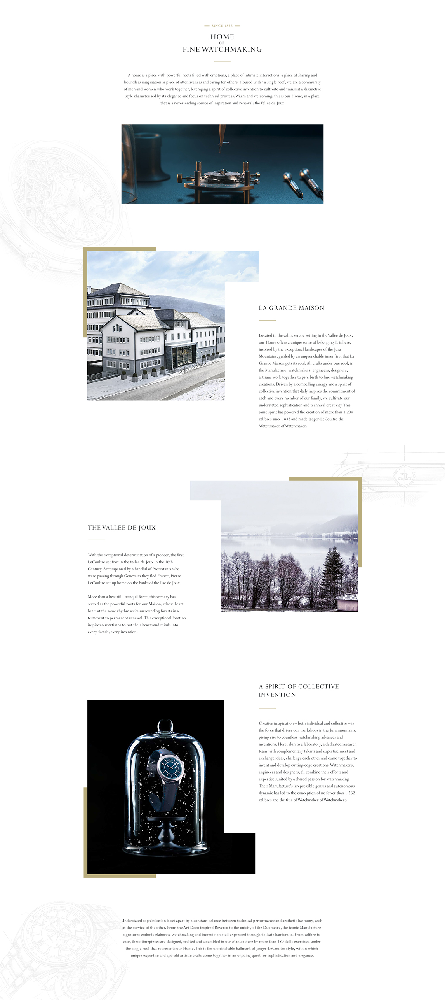
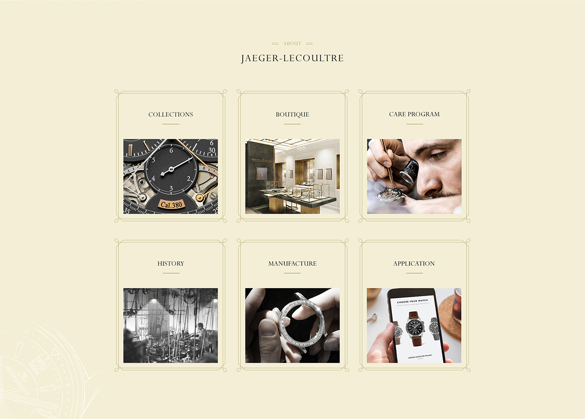
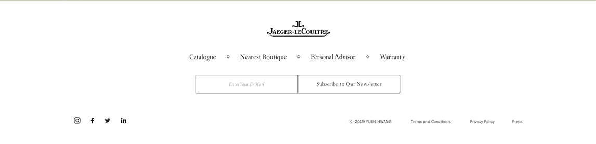
01 메가메뉴
컨텐츠에 접근하기 쉽도록 메뉴를 상단에 고정시켰고 여러 페이지로 나뉘는 탭은 드랍다운 아이콘을 누르면 메뉴가 펼쳐져 선택하는 식으로 설계했습니다
02 메인 슬라이드
새로나온 모델과 리뉴얼 된 모델 영상으로 메인 슬라이드를 구성하여 사용자들에게 제일 먼저 정보를 전달합니다
03 브랜드 아이덴티티 설명
예거 르쿨트르를 대표하여 알려주는 내용들로 컨텐츠를 구성한 영역입니다. 사진 및 텍스트로 브랜드의 이념, 가치, 생각 등을 전달합니다.
04 퀵메뉴
브랜드의 대표 컨텐츠들이 무엇이 있는지 알려주고 바로 연결해주는 퀵메뉴들입니다
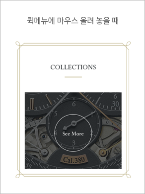
05 FOOTER
카달로그, 부티크, 퍼스널 어드바이저, 보증설명의 탭이 있고 이메일 주소를 전송하면 뉴스레터를 받아볼 수 있습니다. 그 외 사업자에 대한 정보 및 소셜미디어도 확인할 수 있습니다.
서브페이지는 WATCH FINDER, COLLECTION, OUR MANUFACTURE 총 3가지를 진행했습니다.
SUB PAGE 01-
WATCH FINDER
WATCH FINDER 페이지는 사용자들의 성별, 연령대, 선호도를 바탕으로 가장 어울리는 시계를 찾아주는 페이지입니다. 진행단계는 사용자의 취향파악, 추천 리스트 선택, 스트랩 커스터마이징 총 3단계로 나뉘어져 있으며, 커스터마이징이 끝난 후 그 정보를 바탕으로 퍼스널 어드바이저와 부티크 상담예약으로 넘어갈 수 있도록 설계하였습니다.
STEP 01
사용자의 취향파악
최대한 사용자에게 어울릴 수 있는 시계를 추천할 수 있도록 답변을 입력하는 폼(form)입니다. 편리한 사용성을 위해 성별, 연령대, 선호 스타일, 선호하는 디자인, 원하는 기능, 재질까지 총 6개의 절제된 질문으로 사용자의 원하는 바를 파악합니다.
STEP 02
추천리스트 선택
답변을 제출하면 화면이 바뀌면서 왼쪽에는 사용자가 입력한 답변을 보여주고 오른쪽은 답변을 바탕으로 시계모델들을 추천해줍니다. 원하는 시계의 상세페이지로 이동하거나 스트랩 커스터마이징 페이지로 이동할 수 있습니다.
STEP 03
스트랩 커스터마이징
왼쪽에는 시계에 관한 간단한 스펙을 보여주고, 오른쪽에서는 스트랩의 종류를 결정하고 컬러를 선택하면 가운데 있는 이미지에서 그 값을 반영합니다. 커스터마이징 후 그대로 바로 부티크 예약 상담을 신청할 수도 있습니다.
SUB PAGE 02-
COLLECTION
예거 르쿨트르는 총 8가지의 컬렉션 라인을 가지고 있습니다. 각 라인의 시계 모델들을 좀 더 편리하게 이동하면서 보기 위해 페이지의 상단에 탭 구성을 넣었습니다.
컬렉션 탭
상단에 위치한 탭을 펼치면 총 8가지의 컬렉션이 나타나고 선택한 컬렉션의 페이지로 이동하게 됩니다.
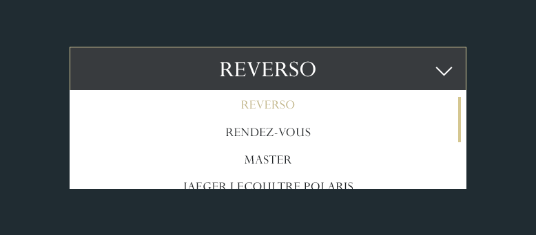
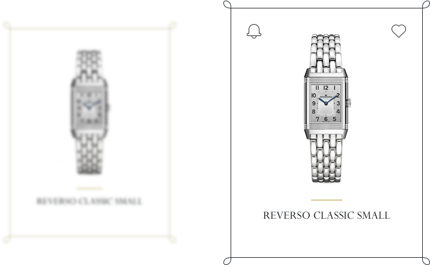
시계아이템에 호버했을 때
마우스를 올리면 좌측에는 바로 부티크 상담신청 예약으로 넘어가는 Contact us 아이콘이 뜨고, 우측에는 마음에 드는 시계를 담을 수 있는 Wishlist 아이콘이 뜹니다
SUB PAGE 03-
MANUFACTURE
예거 르쿨트르 매뉴팩쳐에서 선보이는 25가지 스킬에 대해 소개하는 페이지입니다. 25가지나 되는 내용을 전체적으로 보려면 페이지가 길어져서 많은 스크롤링이 요구됩니다. 사용자의 편의성을 위해 내용 컨텐츠를 6개의 단위로 나누어 해당 내용에 관한 설명글만 보이는 식의 레이아웃으로 구성하였습니다. 6개의 컨텐츠가 나온 후에는 관련 영상들을 배치해 반복되는 레이아웃을 환기시켜주었습니다.